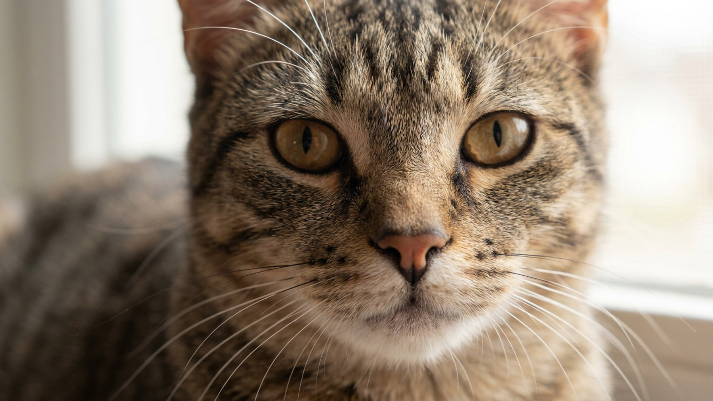

Аргентинский дог весит 40-45 кг и создавался для охоты на пуму в пампасах Аргентины. Это порода с серьёзным физическим и психологическим потенциалом: если его некуда направить, дог найдёт применение сам. Ниже: что это значит в городской квартире и как выстроить совместную жизнь, чтобы она устраивала обоих.
🐾 У вас аргентинский дог?
AnimaLife соберёт уход под породу: к каким болезням есть склонность, что проверять по возрасту, чем кормить и когда пора к врачу. Бесплатно, прямо в мессенджере.
Собрать план ухода → Собрать в MAX →
У вас iPhone? AnimaLife есть в App Store
Антонио Норес Мартинес вывел Dogo Argentino в 1920-х годах специально для загонной охоты: собака должна была работать в стае, держать крупного зверя и при этом не нападать на других псов в команде. Для этого скрещивали кордобских бойцовых собак с грейхаундом, бультерьером, боксёром и догом. В итоге получили животное с высоким болевым порогом, хорошей памятью и природным импульсом контролировать всё вокруг.
Дог привязан к семье, любит детей и нередко становится нежным «диваном» дома. Но с незнакомцами и чужими собаками держится настороженно. Это заложено историей породы, не воспитанием.
Аргентинский дог требует не менее 2 часов физической активности в день. Прогулка на поводке во дворе не считается. Нужны бег, апортировка, игра с нагрузкой. Без этого нарастает тревожность, а она у этой породы выходит через деструктивное поведение.
Короткая белая шерсть выглядит просто, но требует внимания. Дог чувствителен к солнцу: продолжительные прогулки в жару без тени дают риск ожогов кожи, особенно на носу и вокруг глаз. Летом лучше гулять утром и вечером. Купать достаточно раз в 4-6 недель, расчёсывать резиновой щёткой раз в неделю.
У части белых догов встречается врождённая глухота на одно или оба уха. Это не приобретённое нарушение, а особенность пигментации у ряда белых пород. Проверить слух щенка до покупки стоит у ветеринара. Глухой на одно ухо дог живёт полноценно, но требует адаптированного подхода к дрессировке.
По вопросам ухода за кожей и здоровья обсудите с ветеринаром при первом осмотре.
Аргентинский дог подходит опытным владельцам, которые готовы давать собаке серьёзную ежедневную нагрузку и выстраивать чёткие правила с первого дня.
Порода запрещена или ограничена в ряде стран Европы. В России ограничений нет, но страховка и намордник в общественных местах будут нелишними.
🐾 Ваш питомец — аргентинский дог?
Заведите профиль в AnimaLife: приложение запомнит породу, возраст и вес и будет подсказывать по уходу именно для неё. Вопросы AI-ветеринару — круглосуточно и бесплатно.
Завести профиль → Завести в MAX →
У вас iPhone? AnimaLife есть в App Store
🐾 Понравился разбор?
Подпишитесь на канал — каждый день разбираем по одному тревожному симптому у кошек и собак: что в пределах нормы, а когда пора к врачу. Подпишитесь, чтобы не пропустить разбор, который может спасти здоровье вашего питомца.
Материал носит информационный характер и не заменяет очную консультацию ветеринара.